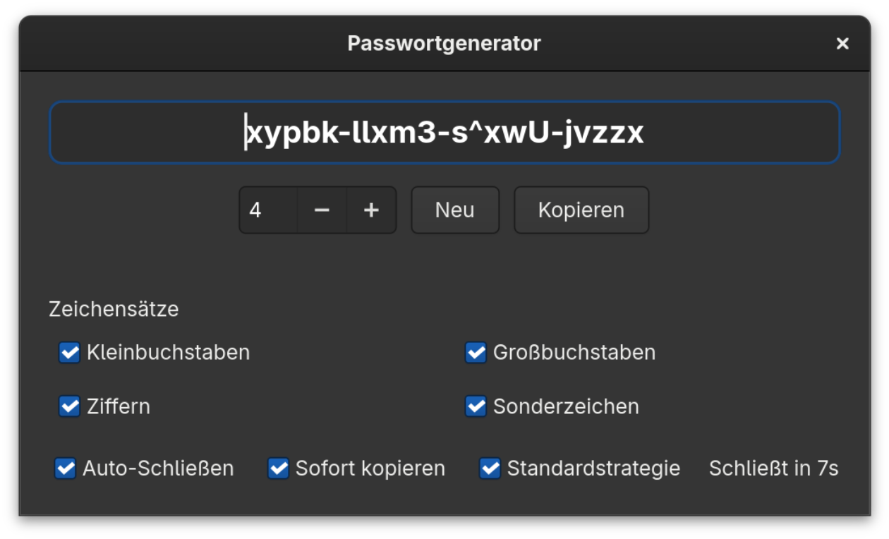
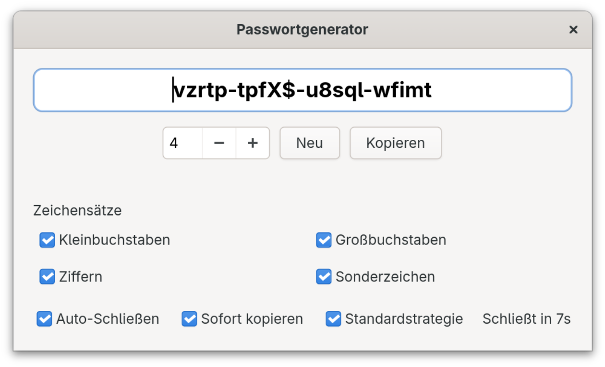

Freie Software · GNOME · komplett offline
Starkes Passwort. Nur bei dir.
Der Passwortgenerator ist eine native GTK4-App für GNOME: kryptografisch starke Passwörter, lokal erzeugt — in Gruppen zu je fünf Zeichen, mit einem Klick in der Zwischenablage. Kein Netz. Keine Cloud. Keine Telemetrie.
hT4k#-qW9m!-Lp2xZ
Stärke
Genauer Wert, Einordnung und Brute-Force-Schätzung — mit genannter Annahme (10¹² Versuche/s, schneller Hash), nicht als Marketing.
01 Vorteile
Dein Passwort verlässt dein System nie.
Alles passiert lokal in einem GTK4-Programm, verpackt als Flatpak: es gibt keinen Server, der etwas speichern, verlieren oder weitergeben könnte — und keine Funktion, die du dafür einzeln nachjustieren müsstest.


100 % offline
Kein Netzwerkzugriff — weder im Flatpak noch im Code. Keine Accounts, keine Cloud, keine Telemetrie: es gibt schlicht nichts, was verloren, gestohlen oder verkauft werden könnte.
Kryptografische Zufallszahlen
Die Zeichen werden über den CSPRNG des Betriebssystems (OsRng) gezogen — dieselbe Quelle, die auch für TLS-Schlüssel genutzt wird.
Gruppen zu fünf
abcde-FGHIJ-12345: leichter zu lesen, zu diktieren und
zu tippen als ein Buchstabenbrei — und die Länge bleibt auf einen Blick nachvollziehbar.
Ehrliche Stärke
Genauer Entropie-Wert, Einordnung und geschätzte Brute-Force-Zeit. Die Annahme (10¹² Versuche/s, schneller Hash) wird genannt — die Standardstrategie wird nicht stärker angegeben, als sie ist.
Ein Klick, fertig
Sofort in die Zwischenablage, auf Wunsch schon beim Start, mit sichtbarer Bestätigung. Danach schließt sich das Fenster selbst — das Passwort ist nicht mehr auf dem Bildschirm, aber weiter einfügbar.
Passend zur Policy
Kleinbuchstaben, Großbuchstaben, Ziffern und Sonderzeichen einzeln abschaltbar — plus eine Standardstrategie, die mindestens je eines davon garantiert.
Acht Sprachen
Deutsch, Englisch, Japanisch, Schwedisch, Spanisch, Italienisch, Französisch und Ukrainisch — die Oberfläche folgt der System-Sprache.
Passt zum System
Hell oder dunkel nach dem System-Setting. Enter erzeugt neu, Strg+W schließt, Strg+Q beendet — der ganze Ablauf bleibt an der Taste.
02 Sicherheit
Lokal erzeugt, nirgends gespeichert.
Der Generator ist so klein wie möglich: GTK4 für die Oberfläche,
rand für den Zufall, ein paar Wayland-Bibliotheken für die
Zwischenablage — keine Konten, keine Konnektoren, keine Dienste im
Hintergrund. Die wichtigsten Eigenschaften:
a.Kein Netzwerk
Die Flatpak deklariert kein --share=network; der Code
enthält keinerlei Netzwerkzugriff. Der Generator kann nichts senden,
weil er technisch gar nicht kann.
b.Kein Log, keine Historie
Passwörter werden weder auf der Konsole noch im System-Journal geschrieben und nie auf die Platte gespeichert — gemerkt werden nur deine Einstellungen.
c.Kurz auf dem Schirm
Auto-Schließen beendet das Programm nach 10 Sekunden; ein Klick ins Fenster hält den Countdown an. In der Zwischenablage bleibt das Passwort, bis du etwas anderes kopierst — wer einen Clipboard-Verlauf nutzt, sollte es dort löschen.
d.Nachvollziehbar
Quelloffen unter CC-BY-SA-4.0: die Erzeugung, die Entropie-Berechnung und die Stärke-Schätzung sind im Code nachprüfbar und getestet.
Contact: https://github.com/danst0/passwordgenerator/security/advisories/new Expires: 2027-10-17T00:00:00.000Z Policy: https://github.com/danst0/passwordgenerator/blob/main/SECURITY.md Preferred-Languages: en, de Canonical: https://passwort.dumke.me/.well-known/security.txt
Schwachstelle gefunden? Bitte privat über GitHub melden — nicht als öffentliches Issue. Ich bestätige Meldungen in der Regel innerhalb von 72 Stunden; veröffentlicht wird nach dem Fix.
03 Installieren
Ein Befehl, und er ist da.
Flathub
Der empfohlene Weg auf jeder Linux-Distribution — aktuell auf dem GNOME-50-Runtime, bei jeder Freigabe automatisch aktualisiert.
Aus dem Quellcode
Rust und GTK4-Entwicklungsbibliotheken — für alle, die es selbst bauen oder umpatchen wollen.
Quellcode auf GitHub